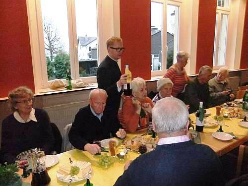

18 Messdienerinnen und Messdiener bei Chrisammesse

Foto: Nicole Cronauge | Bistum Essen
Im voll besetzten Essener Dom haben gestern auch 18 Messdienerinnen und Messdiener unserer Gemeinde St. Josef die Chrisammesse mitgefeiert.
Mehr…
Foto: Nicole Cronauge | Bistum Essen
Im voll besetzten Essener Dom haben gestern auch 18 Messdienerinnen und Messdiener unserer Gemeinde St. Josef die Chrisammesse mitgefeiert.
Mehr…

Beginn der hl. Messe am Abend des Gründonnerstags
Zur Abendmahlmesse hatten sich an diesem Gründonnerstagabend mehr als 100 Gläubige in unserer Kirche versammelt. Sie alle feierten unter Leitung von Pfarrer Burkhard Schmelz die hl. Messe, in der in besonderer Weise der Einsetzung des Abendmahls vor knapp 2000 Jahren gedacht wurde. Mehr…
Fußwaschung während der Gründonnerstags-Messe
Zur Feier der hl. Messe am Gründonnerstagabend haben sich wieder viele Gläubige unserer Gemeinde in der Kirche eingefunden, um sich im gemeinsamen Gebet auf den Höhepunkt des Kirchenjahres, die Osternacht, vorzubereiten.
Da vor der Osternacht die Einsetzung der Eucharistie und das gemeinsame Mahl Jesu mit seinen Jüngern stehen, trafen sich auch unsere Gemeindemitglieder zur Feier der hl. Messe und zum anschließenden einfachen Agape-Mahl im Gemeindeheim. Mehr…
Mit der hl. Messe am Abend des Gründonnerstages ist unsere Gemeinde in die Osterliturgie eingetreten. Mehr…
Pastor Schmelz wäscht Gemeindemitgliedern die Füße
Mit dem Gründonnerstag-Abendgottesdienst beginnt der Eintritt in die Osterfeierlichkeiten.
Mit einer Hl. Messe feiert die Gemeinde die Einsetzung des Abendmahls durch Jesus Christus. Und so wie Jesus seinen Jüngern als Geste die Füße gewaschen hat, so hat auch Pastor Burkhard Schmelz im Rahmen dieses für einen Werktag sehr gut besuchten Gottesdienstes zwölf Gemeindemitglieder die Füße gewaschen.
Anschließend waren alle Mehr…
Mittwoch 27. März 2013
06.00 Uhr Frühschicht
11.00 Uhr Gottesdienst des Kindergartens
Donnerstag Gründonnerstag 28. März 2013
18.00 Uhr Abendmahlmesse, anschließend Agapefeier im Gemeindeheim
Freitag Karfreitag 29. März 2013
15.00 Uhr Liturgie vom Leiden und Sterben Christi
Samstag 30. März 2013
21.00 Uhr Osternachtsfeier unter Mitwirkung des Kirchenchores,
anschl. Osterfeuer der Pfadfinder neben der Kirche mit Grillen und Getränken
Ostersonntag 31. März 2013
11.15 Uhr Festmesse
12.30 Uhr Taufe der Kinder David Chrost und Johanna Angelina Buchner
Ostermontag 01. April 2013
11.15 Uhr Festmesse
Be 25.03.2013
Mit einer feierlichen Abendmesse um 18.00 Uhr unter Leitung ihres Pastors Burkhard Schmelz hat die sich Gemeinde auf den Weg gemacht, das Leiden Jesu Christi in Erinnerung zu halten.
Im Anschluss an diese Hl. Messe stellte Pastor Schmelz das Allerheiligste aus, um der Gemeinde die Gelegenheit zu geben, bis 22.00 Uhr in Stille ein Ewiges Gebet zu halten.
Zur an die Messe anschließenden Agape-Feier im Gemeindeheim waren alle Gemeindemitglieder eingeladen. Hier servierte Pastor Schmelz den rund 50 Teilnehmerinnen und Teilnehmer persönlich ihr jeweiliges Getränk.
|  | |
| Pastor B. Schmelz schenkt persönlich den Wein aus. |
Mit der Hl. Messe am Gründonnerstagabend und der anschließenden Agape-Feier zeichnen die Christen den Beginn des Leidensweges Christi nach, der über die Kreuzigung und den Tod an Karfreitag bis hin zur Auferstehung Christi am Ostertag führt.
Noch einmal erschallen an diesem Abend die Kirchenglocken, und die Orgel begleitet bis zum Gloria den festlichen Gesang. Anschließend verstummen die Glocken, und das Orgelspiel ist erst wieder in der Osternachtsmesse, der Auferstehungsfeier, zu hören.
 |
Zur Mitfeier unserer Gottesdienste während der Karwoche und zum Osterfest sind Sie herzlich eingeladen. Palmsonntag: 11.00 Uhr Palmweihe auf dem Friedhof, anschließend Prozession vom Friedhof zur Kirche und Hl. Messe Mittwoch: 11.00 Uhr Kinderkirche Gründonnerstag: Karfreitag: 15.00 Uhr Kinderkirche Karsamstag: Ostersonntag: Ostermontag: |
| Schatten unseres Kreuzes |
Be 18.04.11
{kind=link}
{kind=link}
{kind=link}
{kind=link}
{kind=link}